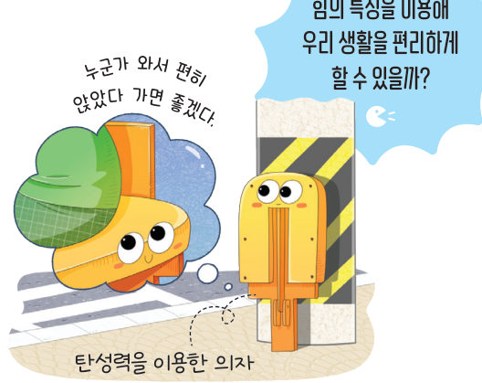
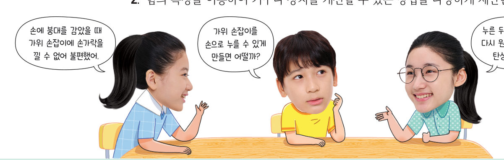
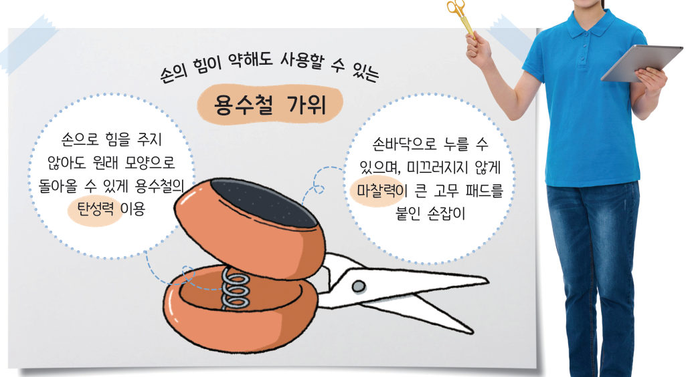
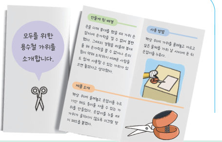

살아있는 교과서 · Ⅴ. 힘의 작용 · 3. 힘의 작용과 운동 상태 변화 · 03 186~188쪽
힘의 특징을 이용한
힘의 특징을 이용한
기구나 장치 설계하기
“누군가 와서 편히 앉았다 가면 좋겠다.” 힘의 특징을 이용해 우리 생활을 편리하게 할 수 있을까? 교과서의 ‘용수철 가위’와 유니버설 디자인 경사로를 가상으로 시험해 보고, 우리 모둠의 기구를 설계해 보자.
🎯 이 탐구를 수행하면 — 일상생활에서 힘의 특징을 이용한 기구, 장치를 설계할 수 있다.
탐구힘의 특징을 이용한 기구나 장치 설계하기 186~187쪽
힘의 특징을 이용해 우리 생활을 편리하게 할 수 있을까?

- 협력적 소통 일상적으로 사용하는 기구나 장치 중 개선하고 싶은 것을 모둠별로 한 가지 정해 개선할 점과 고려할 점을 토의하여 정리한다.
- 힘의 특징을 이용하여 기구나 장치를 개선할 수 있는 방법을 다양하게 제안한다.
- 과정 2에서 제안한 방법 중에서 가장 알맞은 방법을 정하고, 이를 적용한 기구나 장치의 설계도를 만들어 발표한다. (설계도에는 힘의 특징을 어떻게 이용했는지 설명하는 내용을 포함한다.)
💡 기존의 기구나 장치를 개선하는 대신 새로운 기구나 장치를 발명할 수도 있다.

가상 시험대용수철 가위 시험하기
손바닥으로 손잡이를 눌러 종이를 잘라 보자. 용수철이 있으면 손을 떼었을 때 손잡이가 저절로 올라오고, 고무 패드가 있으면 누르는 동안 가위가 미끄러지지 않아요. 두 장치를 켜고 끄며 비교하자.
1용수철 가위에서 손잡이가 원래대로 돌아오게 하는 힘은 이고, 가위가 미끄러지지 않게 하는 힘은 이다.
가상 시험대유니버설 디자인 — 경사로의 기울기
휠체어(사람 포함 무게 800 N)를 계단 대신 경사로로 올리려고 해요. 경사로의 길이를 바꾸면 휠체어를 밀어 올리는 데 필요한 힘이 어떻게 달라질까? (바퀴의 마찰은 아주 작다고 생각해요.)
1경사로를 길게 만들어 기울기를 완만하게 할수록 휠체어를 밀어 올리는 데 필요한 힘은 .
우리 모둠 설계설계 계획서 186~187쪽
1우리 모둠이 선택한 기구나 장치와 개선할 점, 개선할 때 고려할 점을 써 보자.
2우리 모둠의 설계에서 이용한 힘을 모두 골라 보자. (정답은 없어요 — 설계에 따라 골라요)
3설계도 설명 기구의 모습과 각 부분에 힘의 특징을 어떻게 이용했는지 설명해 보자. (종이에 그린 설계도는 사진으로 찍어 선생님께 제출해요.)
4더 해 보기 설계한 기구의 홍보물에 넣을 만들게 된 배경, 제품 소개, 사용 방법을 써 보자.

5정리해 볼까 다른 모둠에서 설계한 기구나 장치를 평가해 보자.
| 평가 항목 | 다른 모둠 평가 |
|---|---|
| 힘의 특징을 적절하게 이용했는가? | |
| 기구나 장치를 개선하려는 목적을 달성했는가? |
대단원 마무리달 여행에 필요한 운동 기구 설계하기
중력이 약한 우주 정거장에서 머무는 우주 비행사는 지구로 돌아왔을 때 중력 변화에 적응하기 위해 꾸준히 근육의 힘을 유지하는 운동을 한다. 달로 여행을 가서 머물 수 있게 된다면, 달에서도 중력 변화에 적응하는 훈련이 필요할 것이다. 이러한 훈련을 할 수 있는 운동 기구를 설계해 보자.
가상 실험지구와 달에서 운동 기구 비교
같은 운동 기구를 지구와 달에서 쓸 때 들어 올리거나 당기는 데 필요한 힘을 비교해 보자.
1달에서도 지구에서처럼 운동하려면 을 이용한 운동 기구가 알맞다.
2🧑🤝🧑 협력적 소통 달에서 쓸 운동 기구를 설계하고, 이용한 힘과 그 까닭을 설명해 보자.
스스로 정리하기세 번째 블록 찾기 · 대단원 정리 188쪽
🧩 세 번째 블록 찾기
부력 조절 장치는 어떤 원리로 몸에 작용하는 힘을 조절할까?
힌트 조각 1 (184쪽): 물속에서 부력 조절 장치에 공기를 가득 넣어 부피가 늘어나면 부력 조절 장치에 작용하는 부력이 중력보다 커진다.
힌트 조각 2 (187쪽): 부력 조절 장치는 물속에 잠긴 물체의 ( )에 따라 부력의 크기가 달라지는 특징을 이용한 장치이다.
힌트 조각 2 (187쪽): 부력 조절 장치는 물속에 잠긴 물체의 ( )에 따라 부력의 크기가 달라지는 특징을 이용한 장치이다.
✓Ⅴ. 힘의 작용 한눈에 보기
| 힘 | 방향 | 크기를 결정하는 것 |
|---|---|---|
| 중력 | 지구 중심 방향 | 물체의 질량 (무게) |
| 탄성력 | 원래 모양으로 돌아가려는 방향 | 변형된 정도 (늘어난 길이에 비례) |
| 마찰력 | 접촉면의 거칠기, 물체의 무게 | |
| 부력 | 중력과 반대 방향 |
스스로 평가활동 돌아보기 · 선생님께 한마디
| 평가 기준 | 스스로 평가 |
|---|---|
| 힘의 특징을 이용하여 기구를 고안하고, 설계도를 토대로 힘의 특징을 설명할 수 있다. | |
| 모둠 활동에 적극적으로 참여하고, 친구들의 이야기를 열린 태도로 경청했다. |
💬활동을 하면서 알게 된 점, 어려웠던 점, 더 알아보고 싶은 점, 선생님께 하고 싶은 말을 써 주세요.
제출학생 정보 · 제출하기
모든 활동을 마친 뒤 제출하면 전체가 한 번에 채점되고 피드백이 나타나요. 답안은 선생님 스프레드시트(중1 탭)에 기록돼요.